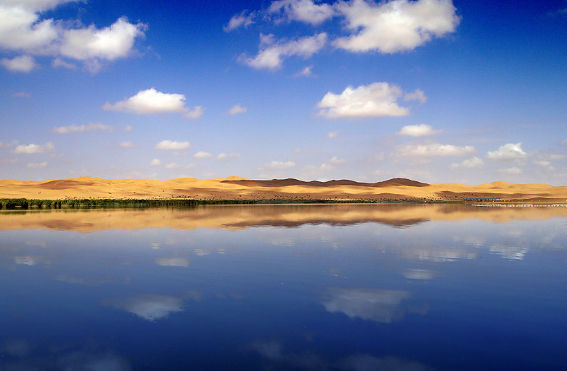
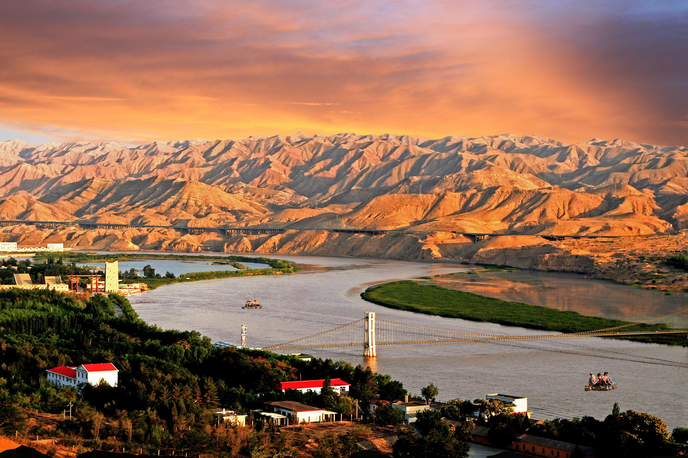
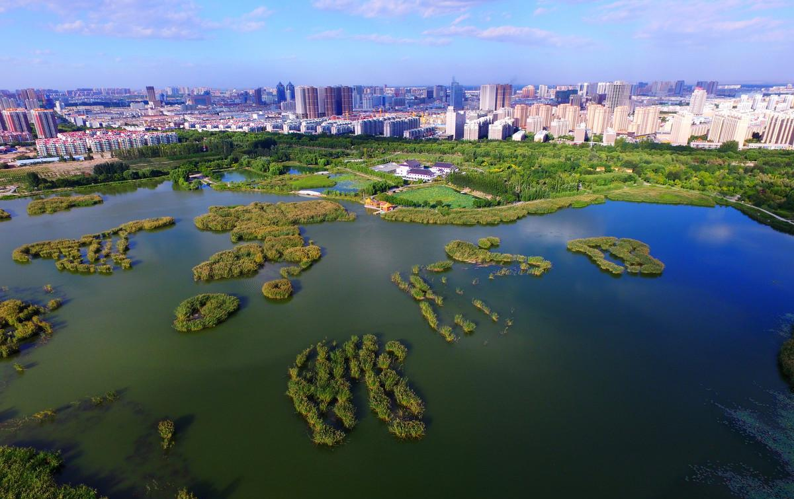
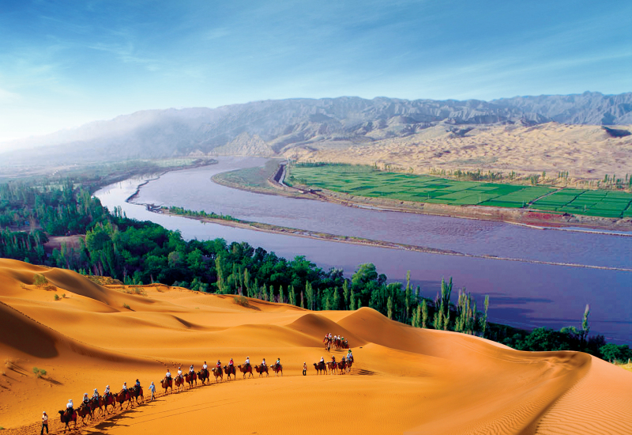

中卫市，简称"卫"，隶属宁夏回族自治区，位于宁夏回族自治区中西部，宁夏、内蒙古、甘肃三省区交汇处，是黄河中上 游第一个自流灌溉市，总面积1.7万平方千米。
中卫市地势西南高，东北低，市区平均海拔1225米，地貌类型分为黄河冲积平原、台地、沙漠、山地与丘陵五大单元，属 典型的温带大陆性季风气候，因受沙漠影响，日照充足，昼夜温差大。中卫市引黄灌区111万亩，是西北地区重要的商品粮、水产品和设施蔬菜生产基地。
2003年12月31日，国务院关同意撤销中卫县，设立地级中卫市，设立沙坡头区，中卫市辖从吴忠市划入的中宁县、从固原市划入的海原县和 新设立的沙坡头区。
中卫市荣获“迪拜国际改善居住环境最佳范例奖”，“中国人居环境范例奖”，“中国人居环境建设杰出贡献奖”，“中国 最佳绿色生态城市”，“ 2011年城市榜投资环境最佳城市”，“2012年度苏商投资中国首选城市”，中国特色魅力城市 100 强。
   